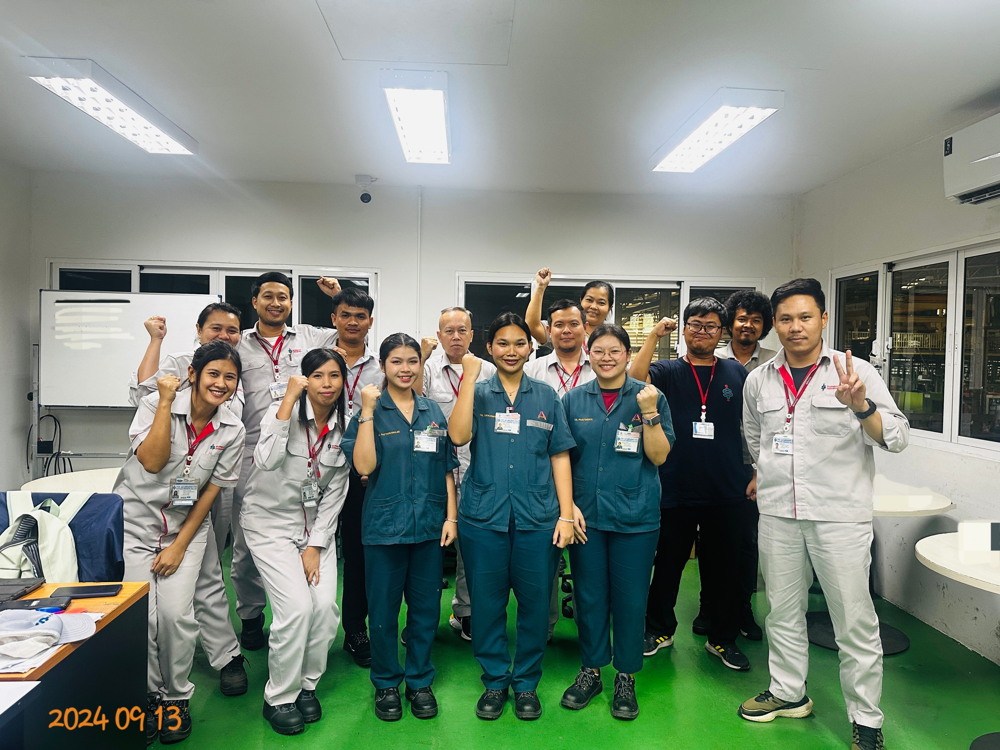
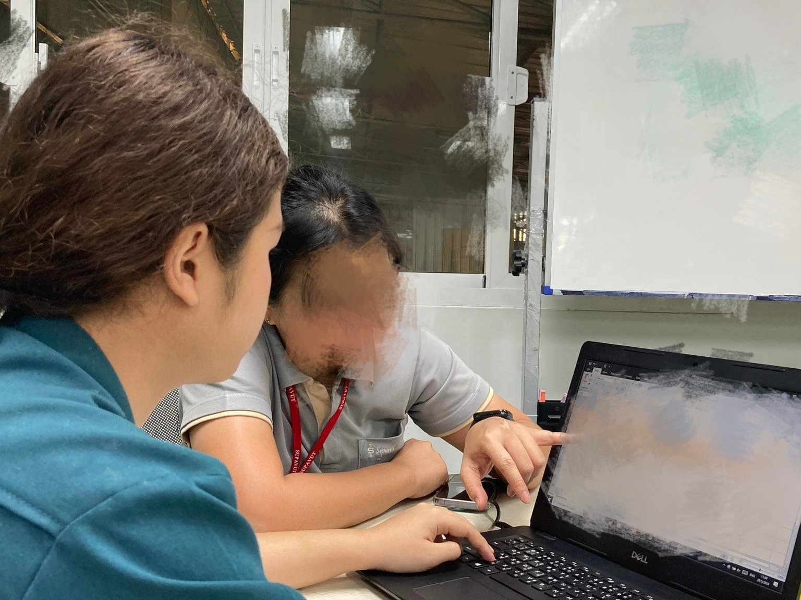
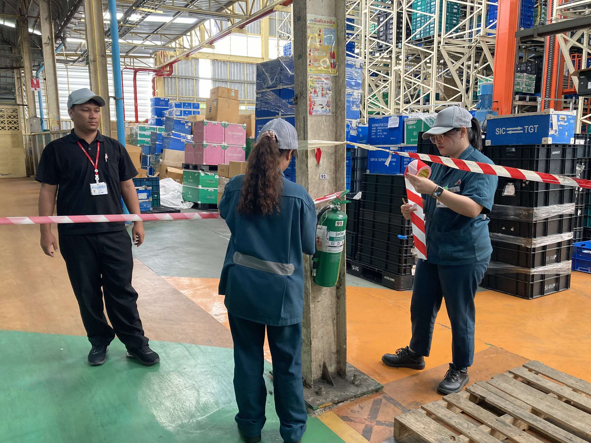
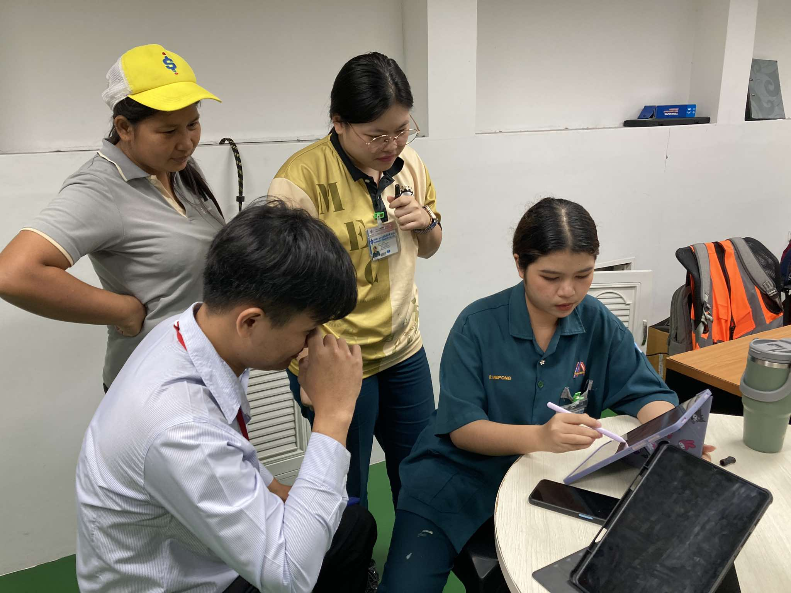
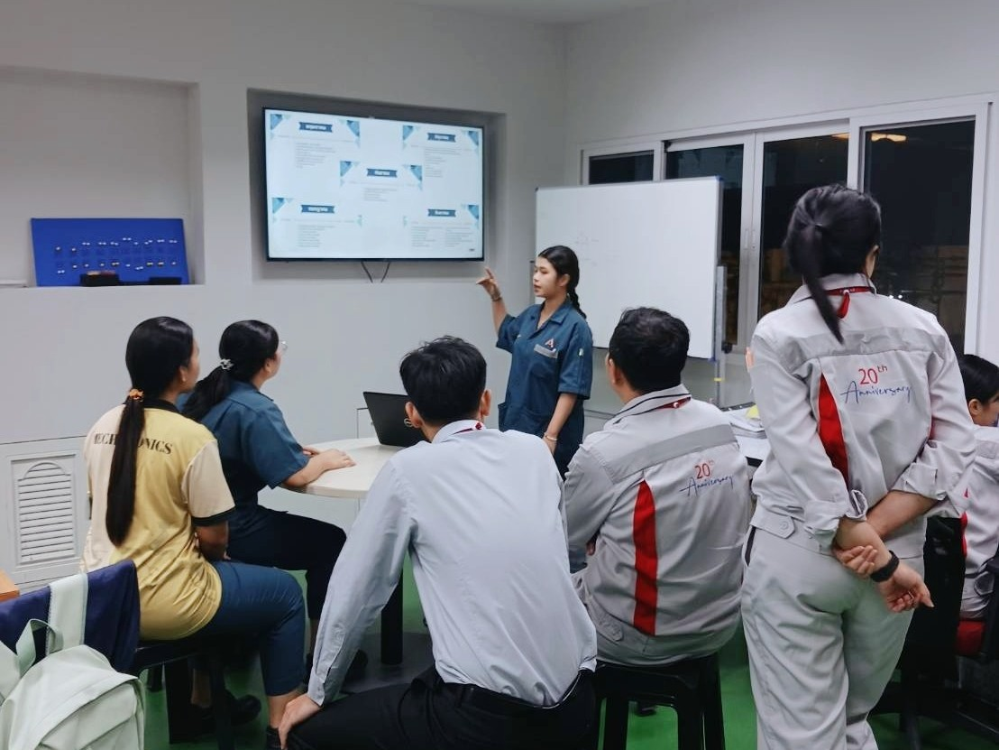
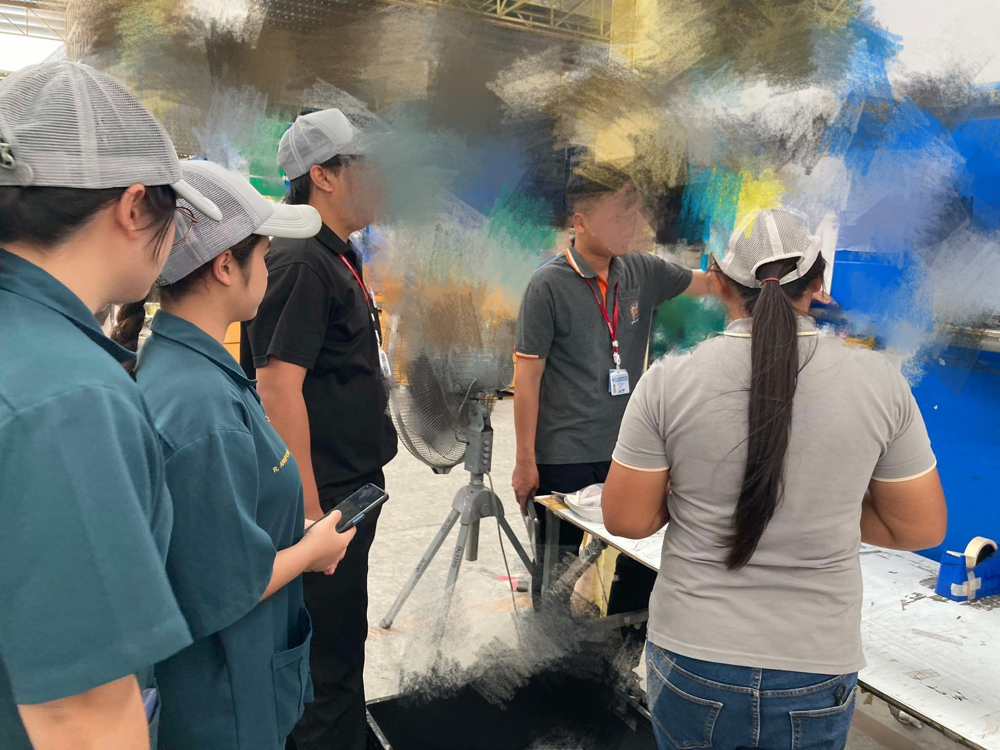
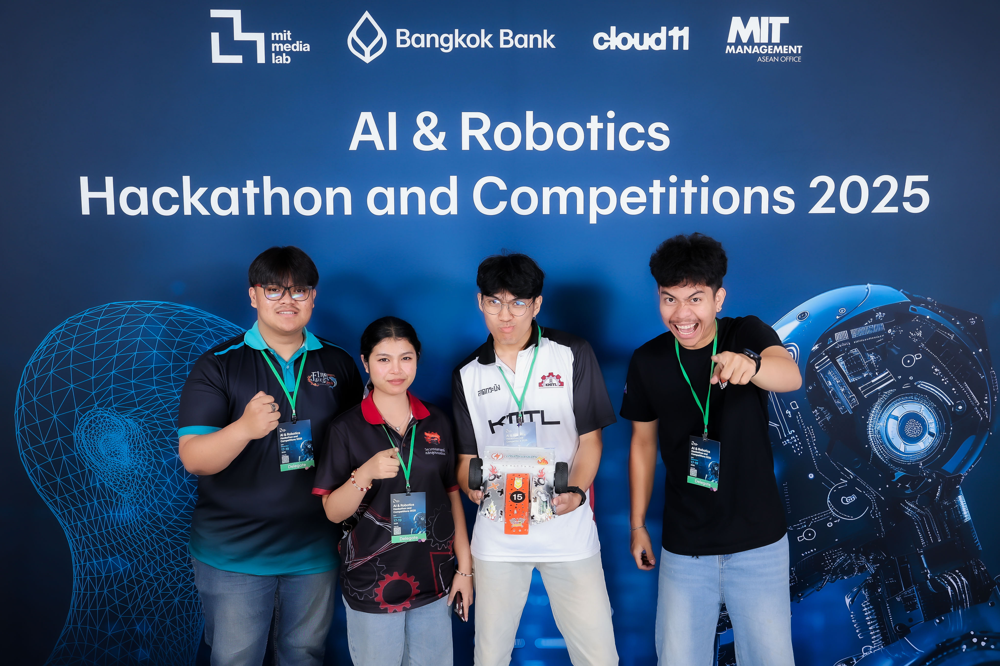
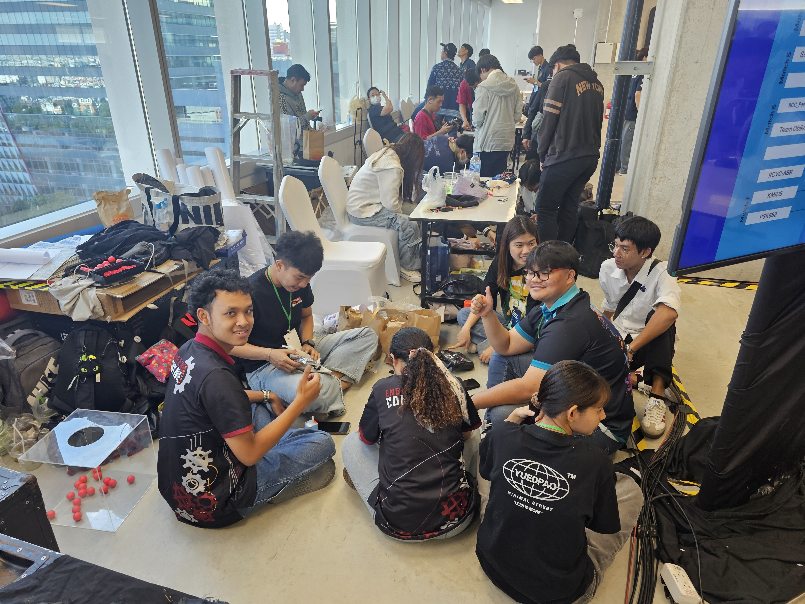
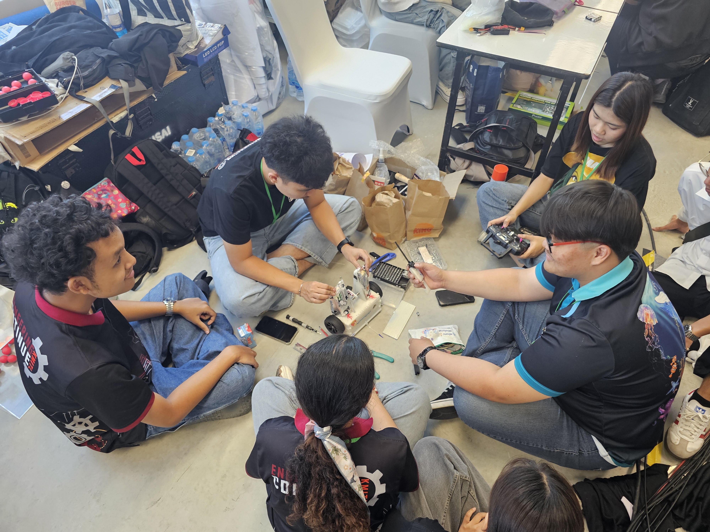
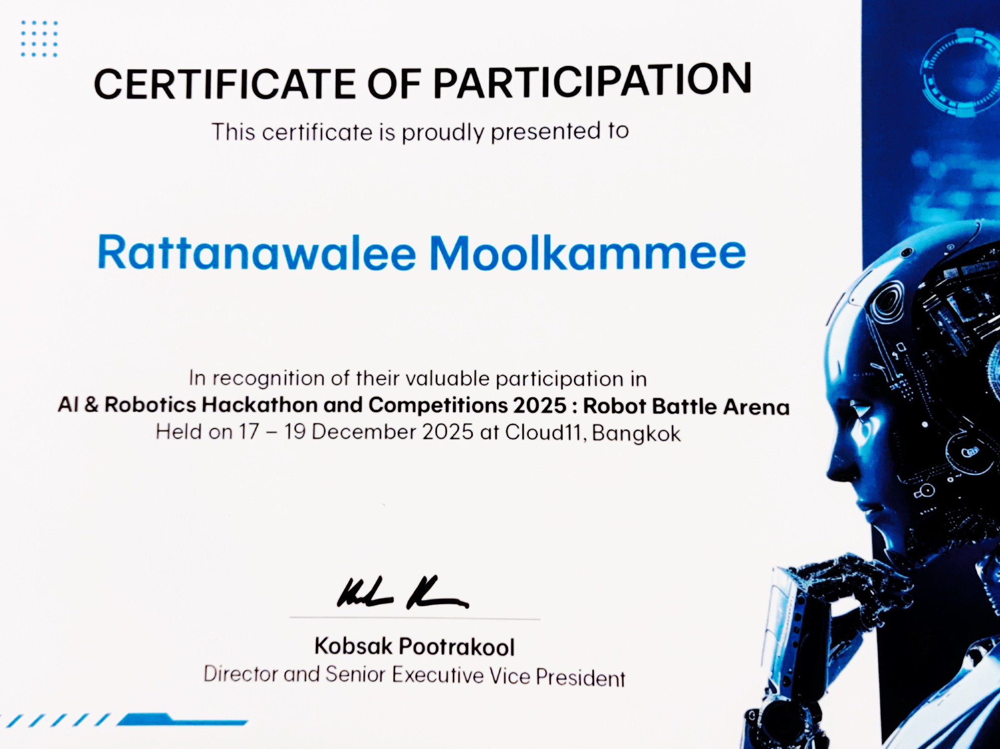

ตำแหน่ง นักศึกษาฝึกงาน
ระยะเวลาการฝึกงาน 4 เดือน (13 พฤษภาคม - 13 กันยายน 2567)
รายละเอียดการฝึกงาน ฝึกงานในแผนก แผนก CPI (Center Process Improvment) ในแผนก CPI จะทำหน้าที่ในการควบคุมคุณภาพของโรงงานให้เป็นมาตรฐาน แก้ไขปัญหาคุณภาพในโรงงาน ทำให้องค์กรเกิดการสูญเสียน้อยที่สุด โดยดิฉันมีหน้าที่ลงหน้างานจริงเพื่อเก็บภาพและวีดีโอการทำงาน บันทึกปัญหาที่เกิดขึ้นในระหว่างการทำงานและนำมาแยก process การทำงานของพนักงานอย่างละเอียดเพื่อนำไปสู่การวิเคราะห์ปัญหาและการแก้ไขปัญหา ซึ่งจะร่วมเสนอไอเดียในการทำโปรเจกต์ Kaizen ของพี่ ๆ ในทีม , ทำงานเอกสารลงข้อมูล Tracking สรุปการเปิดใช้งานเครื่องจักร , ทำโปรแกรมตรวจจับคุณภาพชิ้นงานในส่วนของ Qc ด้วย Cira core

ในระหว่างการฝึกงานที่บริษัท สุภาวุฒิ จำกัด ฉันได้รับประสบการณ์ที่มีค่าในการทำงานในสภาพแวดล้อมจริงขององค์กร ฉันได้เรียนรู้เกี่ยวกับกระบวนการทำงาน การจัดการโครงการ และการทำงานร่วมกับทีมงาน นอกจากนี้ ฉันยังได้มีโอกาสพัฒนาทักษะทางเทคนิคและทักษะการสื่อสาร ซึ่งเป็นสิ่งสำคัญในการเตรียมตัวสำหรับการทำงานในอนาคต

กรอกข้อมูล Tracking

วาง Layout การติดตั้งเครื่องจักร

เสนอไอเดียในการทำโปรเจกต์ Kaizen

ทำรายงานสรุปผลการฝึกงาน

เก็บข้อมูล สรุปผลการทำโปรเจกต์
______________________________________________________________________________________________________________

รายละเอียดการแข่งขัน Hackathon เป็นการแข่งขันที่เน้นการแก้ไขปัญหาหรือสร้างสรรค์ไอเดียใหม่ ๆ โดยทีมงานจะต้องทำงานร่วมกันเพื่อพัฒนาโปรเจกต์หรือแอปพลิเคชันที่มีความคิดสร้างสรรค์และน่าสนใจ การแข่งขัน Hackathon เป็นโอกาสที่ดีในการเรียนรู้และพัฒนาทักษะทางเทคนิค รวมถึงการทำงานเป็นทีมและการนำเสนอไอเดียของตนเอง


ภาพบรรยากาศตอนเตรียมหุ่นยนต์รถบังคับก่อนเข้าแข่งขัน
